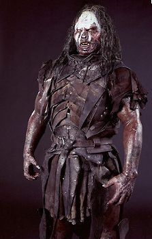
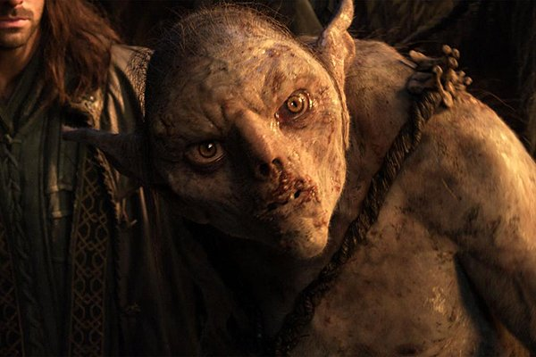
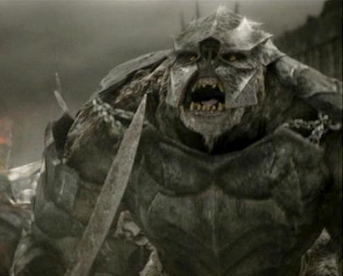

- Les Tenèbres
- Bienvenue au Mordor misérable larve, le seigneur Sauron est satisfait de ta décision (en même temps il est aussi satisfait de toi que quand il se cure les dents avec tes os) donc ne prends pas trop la grosse tête petit push-dug, je serai intransigeant, tu crois être le héros et bien laisse tomber.
- Tu es maintenant un soldat de l’armée de notre maître à tous. Tu vas être assigné à une division suivant ta race, tes armes de prédilection mais aussi ton cerveau de glob . Ne me déçois pas sinon la seule utilité que je te trouverais c’est quand il faudra nourrir les Wargs.
- Tu m’écoutes snaga ?
- Le seigneur a des généraux partout à travers la Terre du Milieu, tu les rejoindras plus tard. Pour l’instant tu restes à un campement qui se situe autour de Barak-Dur. Ils te diront quoi faire allez file j’ai perdu assez de temps comme ça skai !
- Les Huruk-Hais existent depuis l’an 2 475 du troisième âge, ils ont été créer au Mordor par Sauron (mais personne ne sait comment). Par rapport au Snaga, ils sont plus grands, ils ont la peau noire, le sang noir, de petits yeux et sont bien plus endurants. Enfin ils craignent moins la lumière que les Snaga. Passant au fur et à mesure de commandants à légions entières, méprisant toutes les autres races d’orques qui les qualifient d’inférieur, Les Huruk-Hais utilisent des armes aux corps-à-corps. Véritable machine à tuer qui ne vivent d’ailleurs que pour ça.

- 
- Les Semi-Orcs sont des Huruk-Hais croisés avec des hommes. Tout est question de magie, cela vient du sang des hommes Dundlande qui ont fait serment de servir le magicien Saroumane. Ils sont massifs, possédant les particularités des Huruk-Hai avec des traits plus humains, et la peau un peu plus claire. Ils utilisent une grande variété d’armes allant de la lance mesurant 3 mètres à des arbalètes lourdes .
- Les Gobelins sont des orques vivant dans les cavernes, principalement dans la Moria et les Monts Brumeux. Leur petite taille leur permet de se faufiler dans les crevasses et leurs grands yeux noirs les rendent nyctalope . Les Gobelins sont les seuls orques capables de chevaucher les terribles Wargs.
- 
- 
- Pour les trolls, dont la création remonte bien avant le premier âge sont d’abord des serviteurs de Morgoth et plus tard, de Sauron. Ils se démarquent par leurs grandes tailles et surtout par leurs bêtises. Généralement, ils sont utilisés comme troupe de choc, ou alors des tâches plus ingrates comme ouvrir les grandes portes du Mordor. Sauron les fit devenir encore plus dangereux en les mutant en Olog-hait, plus intelligent et capable de parler la langue de Sauron.